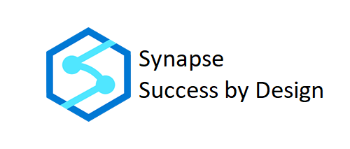
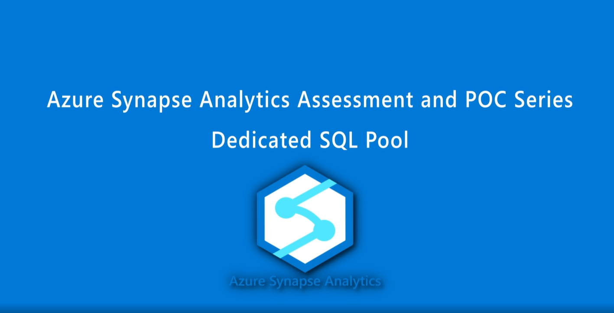
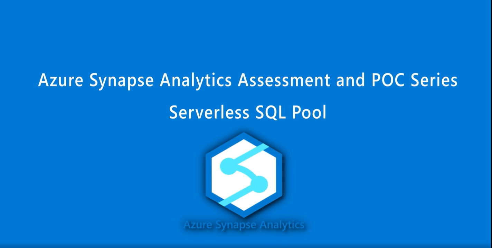
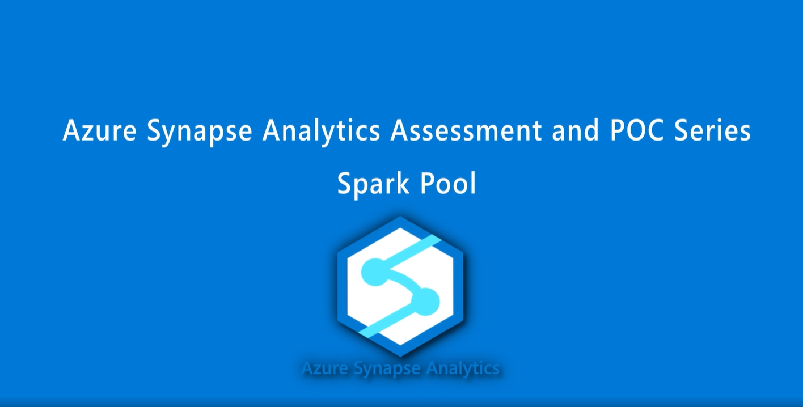
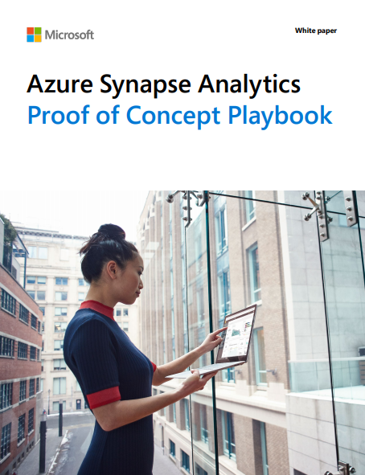

POC Success #
Whether it is an enterprise data warehouse migration, a big data re-platforming, or a green field implementation; each project traditionally starts with a proof of concept.
This Proof of Concept playbook provides a high-level methodology for planning, preparing, and running an effective proof of concept project. An effective proof of concept validates the fact that certain concepts have the potential for real-world production application. The overall objective of a proof of concept is to validate potential solutions to technical problems, such as how systems can be integrated or how results can be achieved through a specific configuration.
These playbooks will help you to evaluate the use of Azure Synapse Analytics for the migration of an existing workload. It has been designed with the following readers in mind:
- Technical experts planning their own in-house Azure Synapse proof of concept project
- Business owners who will be part of the execution or evaluation of an Azure Synapse proof of concept project
- Anyone looking to learn more about data warehousing proof of concept projects
The playbook will deliver the following:
- Guidance on what makes an effective proof of concept
- Guidance on how to make valid comparisons between systems
- Guidance on the technical aspects of running an Azure Synapse proof of concept
- A road map to relevant technical content from Azure Synapse
- Guidance on how to evaluate proof of concept results to back business decisions
- Guidance on how to find additional help
To get started click the white paper below.
|  |
 |
 |
|---|

Combined PoC Playbook